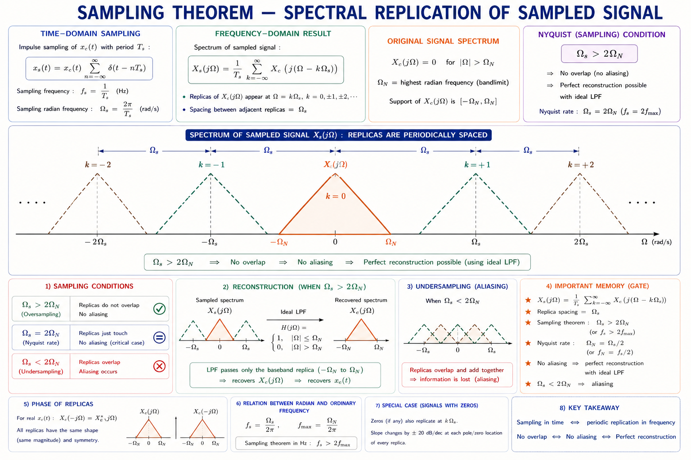
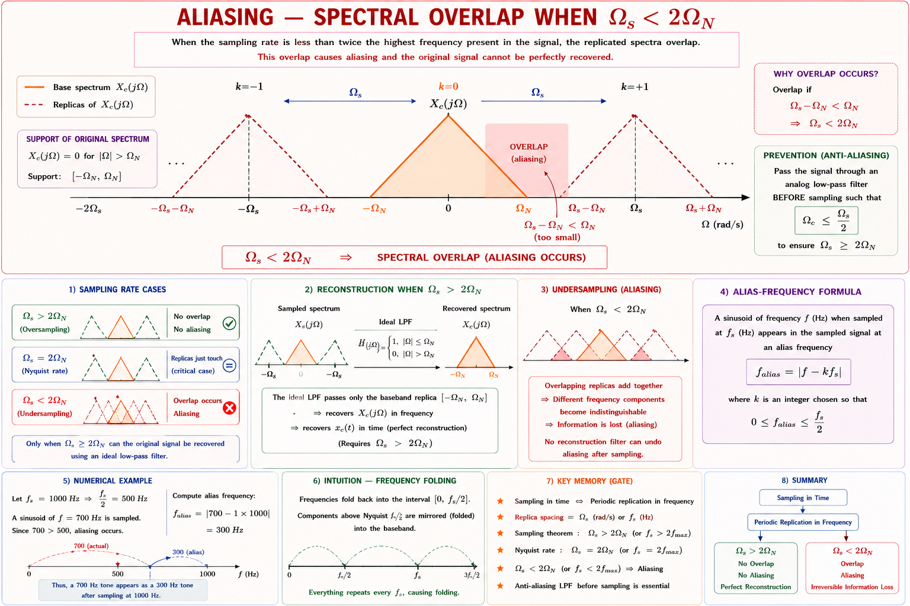
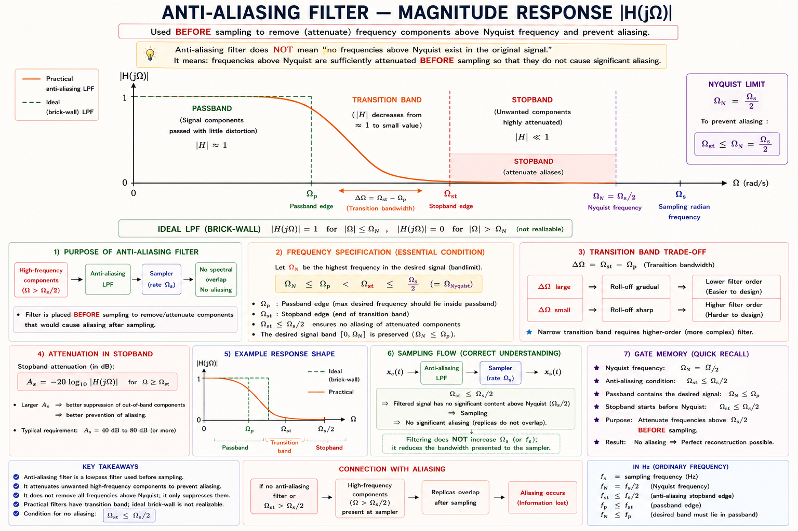
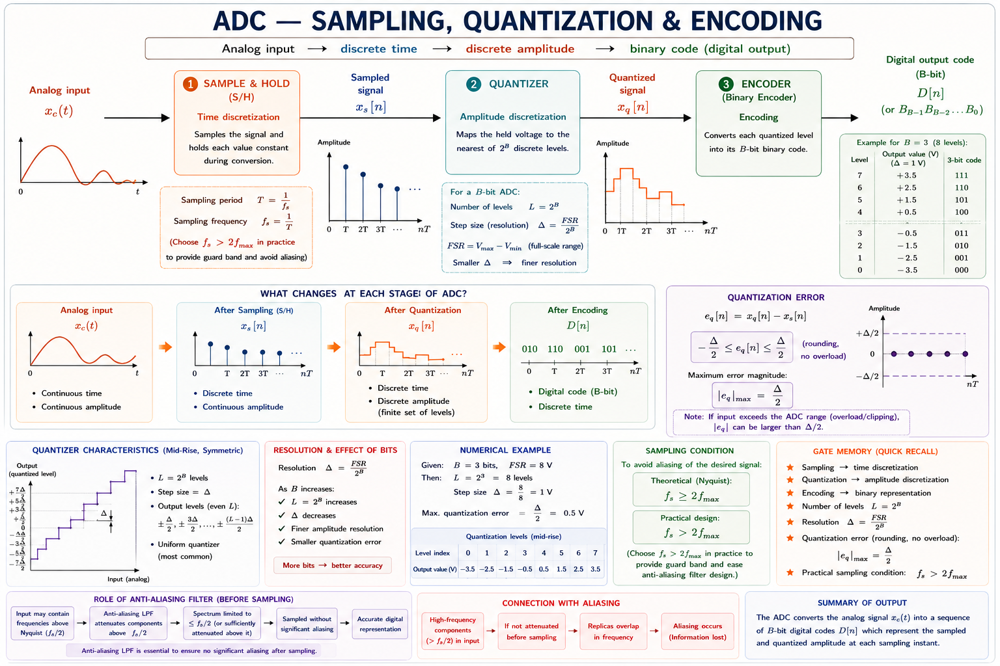
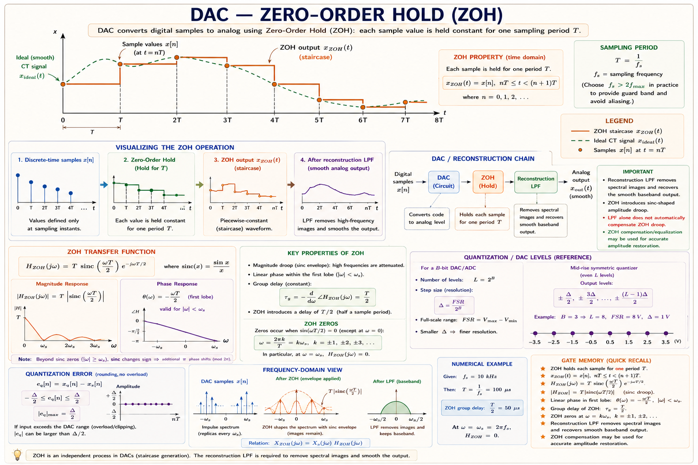
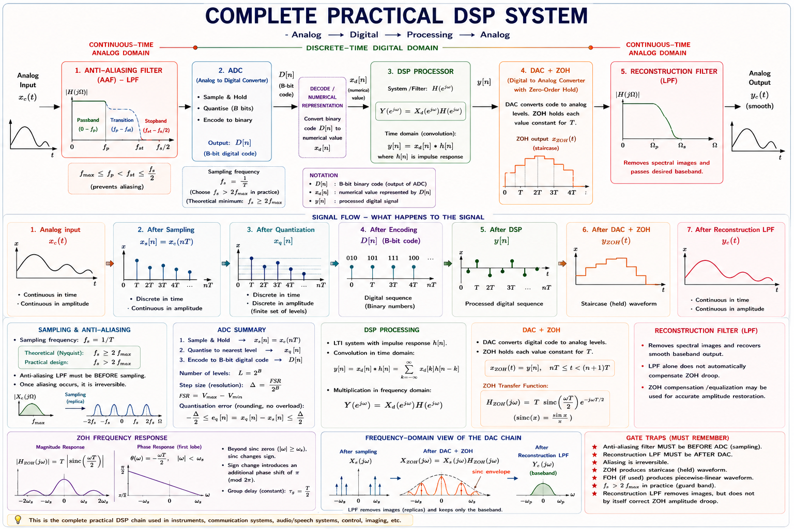

ADC, DAC, anti-aliasing filters, reconstruction filters, the complete practical DSP chain — comprehensive coverage of sampling theorem, quantisation, ideal and practical conversion, GATE and IES exam concepts with full derivations and solved examples.
Almost every real-world physical signal — speech, ECG, seismic vibrations, audio, radar echoes — is continuous-time (CT) and analog. Yet modern systems process them with discrete-time (DT) digital algorithms running on microprocessors and DSPs. The bridge between these two worlds is the subject of Chapter 1.
The reason for this conversion is entirely practical. Digital processing offers precision that does not degrade over time, perfectly repeatable arithmetic, programmability (the same hardware can implement any filter simply by changing coefficients), storage without quality loss, and immunity to component tolerances, temperature drift, and noise that plague analog circuits.[1]
Chapter 1 integrates Signals & Systems (Fourier transform, convolution), Communication Systems (sampling, modulation analogy), and Electronic Circuits (op-amp comparators, S&H circuits). GATE frequently asks questions that span all three.
Sampling converts a continuous-time signal \(x_c(t)\) into a discrete-time sequence \(x[n]\). Mathematically, the ideal sampler multiplies \(x_c(t)\) by an impulse train (Dirac comb):[1]
Here \(T\) is the sampling period (seconds) and \(f_s = 1/T\) is the sampling frequency (Hz). The discrete-time sequence is then simply:
The impulse train model is mathematical idealisation. A real sampler uses a sample-and-hold (S&H) circuit that holds the value for a finite aperture time. This causes a sinc rolloff in the spectrum — accounted for by the aperture effect correction.
Because multiplication in time ↔ convolution in frequency, the spectrum of \(x_s(t)\) is the convolution of \(X_c(j\Omega)\) with the Fourier transform of the impulse train:
This is the fundamental result: sampling replicates the CT spectrum periodically with period \(\omega_s = 2\pi f_s\). If the replicas do not overlap, perfect reconstruction is possible. If they do overlap, aliasing occurs.[1]

The DTFT of \(x[n]\) and the CTFT of \(x_s(t)\) are related by a simple frequency scaling. If \(\omega\) is the discrete-time frequency (radians/sample) and \(\Omega\) is the CT frequency (rad/s):[1]
The mapping \(\omega = \Omega T\) is fundamental: the Nyquist frequency \(\Omega_N = \pi/T = \omega_s/2\) maps to \(\omega = \pi\), which is exactly the highest DT frequency. This is why the DTFT is inherently periodic with period \(2\pi\).
Let \(x_c(t)\) be a bandlimited signal with \(X_c(j\Omega) = 0\) for \(|\Omega| \geq \Omega_N\). Then \(x_c(t)\) is uniquely determined by its samples \(x_c(nT)\) if the sampling frequency satisfies:
The minimum sampling rate \(f_s = 2f_N\) is called the Nyquist rate. The frequency \(f_N = f_s/2\) is the Nyquist frequency — the highest frequency that can be represented without aliasing at a given \(f_s\).[1][2]
When the sampling theorem is satisfied, the original CT signal can be exactly reconstructed using the ideal sinc interpolation formula:[1]
Think of a sine wave as a slowly rising and falling tide. If you measure the water level only once per day (undersampling), you might see it appear stationary or rising very slowly — you miss the full tidal cycle. But if you measure every hour (sufficient sampling), you capture every peak and trough precisely. The sampling theorem tells you exactly how often you must measure.
| Signal | Bandwidth (fN) | Nyquist Rate (2fN) | Practical fs |
|---|---|---|---|
| Human speech | 4 kHz | 8 kHz | 8 kHz (telephony) |
| Audio (hi-fi) | 20 kHz | 40 kHz | 44.1 / 48 kHz |
| ECG (medical) | 150 Hz | 300 Hz | 500–1000 Hz |
| EEG (brain) | 100 Hz | 200 Hz | 256–512 Hz |
| AM radio (audio) | 5 kHz | 10 kHz | 11.025 kHz |
| Power system (50 Hz) | 3 kHz (harmonics) | 6 kHz | 1–10 kHz (relays) |
When the sampling frequency violates the Nyquist condition (\(\omega_s < 2\Omega_N\)), the replicated spectra overlap. The overlapping components add together, creating a new, lower-frequency component that did not exist in the original signal. This corruption is called aliasing.[1]
A practical rule: given input frequency \(f\) and sampling rate \(f_s\), the alias is \(f_{\text{alias}} = |f - \text{round}(f/f_s) \cdot f_s|\).

Once aliasing occurs, it cannot be corrected in post-processing. The high-frequency information is permanently lost and lower-frequency components are corrupted. This is why the anti-aliasing filter must come before the sampler, not after. GATE frequently tests this ordering.
A wagon wheel in an old film appears to spin backwards. The camera samples frames at 24 fps (sampling rate). If the wheel spins at slightly more than 12 full rotations per second, each successive frame shows the spokes at a position slightly behind the previous frame — the wheel appears to rotate backwards. The spoke position has been aliased to a negative frequency. This is textbook aliasing with \(f_s = 24\) Hz and \(f_N = 12\) Hz.
The anti-aliasing filter (AAF) is a continuous-time lowpass filter placed at the input of the ADC. Its job is to bandlimit the incoming signal to \(|\Omega| < \omega_s/2\) before sampling, so the Nyquist condition is satisfied.[1][3]
| Property | Ideal AAF | Practical AAF |
|---|---|---|
| Passband | \(|\Omega| < \omega_s/2\) — unity gain | Gain ripple (Butterworth, Chebyshev, Elliptic) |
| Stopband | Infinite attenuation for \(|\Omega| \geq \omega_s/2\) | Finite attenuation; transition band exists |
| Transition band | Zero width (brick wall) | Non-zero; causes guard band requirement |
| Phase response | Linear phase (constant group delay) | Non-linear (Butterworth/Cheby) unless Bessel |
| Realisation | Unrealisable (non-causal) | Active RC, LC ladder, switched-capacitor |
| Roll-off | Instantaneous | −20n dB/decade (n = order) |

In practice, oversampling (choosing \(f_s \gg 2f_N\)) greatly eases AAF design. If \(f_s = 8f_N\) (8× oversampling), the transition band occupies the range \(f_N\) to \(3.5f_N\) — four times wider — allowing a much lower-order analog filter. After digital filtering and decimation, the final effective rate can be returned to \(2f_N\). This is the principle behind sigma-delta (ΣΔ) ADCs used in audio and instrumentation.[3]
The ADC performs two operations: sampling (converting CT → DT) and quantisation (converting continuous amplitude → finite number of bits). These are theoretically separable but implemented together in hardware.[2][3]

For a full-scale sinusoidal input, the Signal-to-Quantisation-Noise Ratio (SQNR) is:[2]
Each additional bit adds approximately 6 dB of SQNR. A 16-bit audio ADC gives SQNR ≈ 6.02×16 + 1.76 ≈ 98 dB. A 12-bit ADC gives ≈ 74 dB. This formula is one of the most frequently tested in GATE EC/EE.
| ADC Type | Speed | Resolution | Power | Application |
|---|---|---|---|---|
| Flash (Parallel) | Very High (GHz) | Low (4–8 bit) | Very High | Oscilloscopes, RF |
| SAR (Successive Approx.) | Medium (1 MSPS) | High (12–18 bit) | Low | Data acquisition, μC |
| Sigma-Delta (ΣΔ) | Low (kHz range) | Very High (20–24 bit) | Medium | Audio, instrumentation |
| Pipeline | High (100 MSPS) | Medium (12–16 bit) | Medium | Video, communications |
| Dual-slope (Integrating) | Very Low | Very High | Low | Multimeters |
The DAC converts a digital binary sequence \(x[n]\) back into a staircase CT signal. The simplest model is the zero-order hold (ZOH): the output holds each sample value for exactly one sampling period \(T\).[1][2]
The ZOH introduces a sinc-shaped amplitude distortion (attenuating higher frequencies) and a linear phase delay of T/2 (half-sample delay). This distortion must be corrected by the reconstruction filter.[1]

A more sophisticated DAC uses linear interpolation between samples (first-order hold), producing a piecewise-linear output instead of a staircase. FOH has better high-frequency characteristics: its transfer function is a \(\text{sinc}^2\) shape rather than sinc, meaning faster rolloff and less distortion before the reconstruction filter.
The reconstruction filter is a CT lowpass filter applied after the DAC. Its two functions are: (1) remove the spectral images (periodic replicas at \(k\omega_s\)) created by the sampling/ZOH process, and (2) compensate for ZOH roll-off to restore a flat passband.[1][3]
In practice, the ZOH roll-off is only a few dB across the audio band (for oversampled systems), so the reconstruction filter can be a simple lowpass without the \(H_0^{-1}\) correction. For critical applications (high-frequency signals near Nyquist), a digital inverse-ZOH correction is applied before the DAC.[3]
A CD audio DAC operates at 44.1 kHz with 16-bit samples. The ZOH output has images at 44.1 kHz, 88.2 kHz, etc. An 8th-order analog elliptic lowpass filter (cutoff ~20 kHz) removes these images. Modern CD players use oversampling at 8× or 32× (352.8 kHz or 1.41 MHz) so the analog filter's transition band is much wider — a simple 1st-order filter suffices, avoiding group-delay distortion.

| Block | Ideal Behaviour | Practical Imperfection | Effect on Signal |
|---|---|---|---|
| AAF | Brick-wall LPF at \(f_s/2\) | Finite roll-off, passband ripple | Partial aliasing; small passband distortion |
| S&H | Instantaneous sampling | Finite aperture time \(t_a\) | Sinc roll-off: \(-20\log_{10}[\text{sinc}(f\cdot t_a)]\) dB |
| Quantiser | Infinite resolution | B bits → step size Δ | Quantisation noise; SQNR ≈ 6B+1.76 dB |
| DAC/ZOH | Impulse reconstruction | Holds each sample for T seconds | Sinc roll-off, T/2 group delay, spectral images |
| Reconstruction Filter | Brick-wall LPF | Finite roll-off | Residual images; passband ripple |
Q: What happens if AAF cutoff is set below fs/2? Some legitimate signal frequencies are attenuated, causing signal distortion even without aliasing. The AAF cutoff should be as close to fs/2 as the filter order allows.
Q: What if quantisation bits B → ∞? Quantisation noise → 0, SQNR → ∞. The ADC approaches ideal sampling. In practice, thermal noise in the circuit limits useful resolution to about 16–20 bits.
Q: Can we remove the DAC ZOH and use ideal impulses instead? No — ideal impulse DAC is physically unrealisable. The ZOH is the closest practical approximation. However, with oversampling, the ZOH effect is negligible in the audio band.
A continuous-time signal \(x(t) = \cos(200\pi t) + \cos(400\pi t)\) is sampled at \(f_s = 300\) Hz. The frequency content of the sampled signal (in Hz) is:
The signal contains \(f_1 = 100\) Hz and \(f_2 = 200\) Hz. With \(f_s = 300\) Hz, Nyquist limit = 150 Hz. \(f_1 = 100\) Hz is below 150 Hz — no aliasing. \(f_2 = 200\) Hz exceeds 150 Hz — aliased to \(|200 - 300| = 100\) Hz. So sampled signal contains 100 Hz (original) + 100 Hz (alias) + … wait — 100 Hz alias corrupts the 100 Hz original. The 200 Hz component aliases to \(f_{\text{alias}} = |200 - 1\times300| = 100\) Hz. Answer: (B) — both 100 Hz and 200 Hz are present before the alias folds 200 Hz onto 100 Hz.
An ADC has 12 bits of resolution. The approximate SQNR for a full-scale sinusoidal input is:
Apply the formula: SQNR = \(6.02 \times 12 + 1.76 = 72.24 + 1.76 = 74\) dB. Answer: (B) 74 dB.
In a digital signal processing system, the anti-aliasing filter is placed:
The anti-aliasing filter must operate on the continuous-time analog signal before sampling. Once sampling has occurred, aliasing has already happened and cannot be corrected. Option (D) describes the reconstruction filter (different block). Answer: (C).
A signal \(x(t)\) has bandwidth \(B = 3\) kHz. The minimum sampling rate to avoid aliasing is:
Nyquist rate = \(2 \times B = 2 \times 3 = 6\) kHz. At exactly 6 kHz, the spectral replicas just touch at the Nyquist frequency but do not overlap. Answer: (C) 6 kHz.
The transfer function of the Zero-Order Hold (ZOH) in the frequency domain is proportional to:
The ZOH holds each sample for duration \(T\), which in the Laplace/Fourier domain is a rectangular pulse of width \(T\). Its transform is \(T\,e^{-j\Omega T/2}\text{sinc}(\Omega T / 2\pi)\). The \(e^{-j\Omega T/2}\) factor represents the half-period delay; the sinc factor represents amplitude roll-off. Answer: (B).
Step 1: Check if aliasing occurs. Nyquist limit = \(f_s / 2 = 300\) Hz. Since \(f = 850 > 300\) Hz, aliasing will occur.
Step 2: Find the value of \(k\) that places the alias in \([0, f_s/2]\).
Answer: The 850 Hz sinusoid aliases to 250 Hz in the sampled output. The sampled signal will appear to contain a 250 Hz component — not the original 850 Hz.
(a) SQNR for full-scale sinusoid:
(b) Quantisation step size:
(c) Half full-scale amplitude effect: When input amplitude is halved, the signal power drops by 6 dB but quantisation noise power remains unchanged. Therefore SQNR reduces by 6 dB to approximately 92 dB. Each halving of amplitude costs 6 dB of SQNR — this is why dynamic range is limited in ADCs.
Nyquist frequency: \(f_N = f_s/2 = 4\) kHz.
3 kHz component: Below \(f_c = 5\) kHz of AAF — passes through. Below \(f_N = 4\) kHz — no aliasing. ✓ Appears correctly at 3 kHz.
6 kHz component: Above \(f_c = 5\) kHz — should be attenuated by AAF. However, the transition band extends to 8 kHz, so at 6 kHz the AAF may only provide partial attenuation (say −20 dB instead of −∞ dB). The residual 6 kHz energy then aliases to \(|6 - 8| = 2\) kHz.
Consequence: The output contains a 2 kHz alias artifact that overlaps with the legitimate speech band. This creates audible distortion. Solution: use a higher-order AAF to achieve steeper roll-off before \(f_N\), or increase \(f_s\) to 16 kHz to widen the transition band.
\(f_s \geq 2f_N\). Ideal: impulse train. DTFT: \(\omega = \Omega T\), periodic period \(2\pi\). Sinc interpolation reconstructs exactly.
Occurs when \(f_s < 2f_N\). Alias: \(f_a=|f - kf_s|\). Irreversible! Prevention: AAF before ADC. Wagon-wheel effect is real-world example.
CT LPF before ADC. Cutoff ≤ fs/2. Transition band → guard band. Oversampling relaxes filter order. Bessel for linear phase.
SQNR = 6.02B + 1.76 dB. Step Δ = FSR/2B. Each extra bit → +6 dB SQNR. SAR for moderate speed, ΣΔ for high-res audio, Flash for GHz.
ZOH: \(H_0 = Te^{-j\Omega T/2}\text{sinc}(\Omega T/2\pi)\). Creates staircase + T/2 delay + sinc roll-off. FOH uses linear interpolation (sinc² shape).
CT LPF after DAC. Removes spectral images at \(kf_s \pm f\). Compensates ZOH roll-off. Oversampling → simple 1st-order RC suffices.
Trap 1: Confusing Nyquist rate (= 2fN, the minimum fs) with Nyquist frequency (= fs/2, the maximum representable frequency at a given fs).
Trap 2: Forgetting that at exactly the Nyquist rate, replicas just touch — aliasing depends on whether the signal has energy at fN (strict vs non-strict inequality in textbooks).
Trap 3: Confusing the AAF (before ADC) with the reconstruction filter (after DAC). GATE asks about ordering — memorise the correct DSP chain.
Trap 4: Applying SQNR = 6.02B + 1.76 dB for non-full-scale signals. For an input at amplitude A below full scale, SQNR decreases by 20·log10(FSR/2A) dB.
Trap 5: Assuming ZOH has no effect. The sinc roll-off of ZOH attenuates by −3.92 dB at fN (for 1× oversampling) — significant for audio and needs compensation.
Ask any question about sampling, aliasing, ADC/DAC, anti-aliasing filters, or the DSP chain. Get step-by-step GATE-level answers instantly.
CT × impulse train → periodic spectrum. \(\omega = \Omega T\). Nyquist: \(f_s \geq 2f_N\). Reconstruction via sinc interpolation (ideal).
Spectral overlap when \(f_s < 2f_N\). \(f_{\text{alias}}=|f - kf_s|\). Irreversible. AAF prevents it. Wagon-wheel, stroboscope are classic examples.
CT LPF at fs/2. Practical: Butterworth/Elliptic. Transition band → guard band. 8× oversampling makes 1st-order RC sufficient (ΣΔ approach).
SQNR = 6.02B + 1.76 dB. Δ = FSR/2B. Error bounded by ±Δ/2. SAR (12–18 bit, moderate speed), Flash (8 bit, GHz), ΣΔ (24 bit, audio).
\(H_0 = Te^{-j\Omega T/2}\text{sinc}(\Omega T/2\pi)\). Staircase output. Sinc attenuation −3.92 dB at fN. T/2 group delay. Images at \(kf_s \pm f\).
CT LPF after DAC. Removes images. Corrects ZOH roll-off (or use digital pre-compensation). Chain order: DAC → Reconstruction LPF → Analog output.
Discrete-Time Signals and Systems — unit impulse, unit step, exponentials, classification of DT systems (linear, time-invariant, causal, stable), convolution sum, BIBO stability, and connection to Chapter 1's sampling framework — with full GATE and IES coverage.
All technical content is derived from the following standard textbooks and learning resources. All explanations, derivations, diagrams and examples are original to Aarova AI.